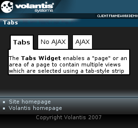

The Tabs widget provides a familiar tabbed interface. We will create a Tabs widget containing three tabs. One of those tabs will load its content using the load action.

<widget:tabs>
<widget:tab id="firstTab">
<p> The <strong>Tabs Widget</strong> enables a "page" or an area of a page to
contain multiple views which are selected using a tab-style strip across the
top of the page or page area.</p>
</widget:tab>
<widget:tab id="secondTab">
<p>Some content not updated by Ajax</p>
</widget:tab>
<widget:tab id="thirdTab">
<widget:load src="ajax-tab-response.xdime"/>
<p>This content will be changed by content downloaded by AJAX request</p>
</widget:tab>
</widget:tabs><widget:tab id="thirdTab"> <widget:load src="ajax-tab.response"/> <p>This content will be changed by content downloaded by AJAX request</p> </widget:tab>
<response:response xmlns="http://www.w3.org/2002/06/xhtml2"
xmlns:response="http://www.volantis.com/xmlns/2006/05/widget/response">
<response:head/>
<response:body>
<response:tab>
<p>This content is updated by Ajax request</p>
</response:tab>
</response:body>
</response:response>
<?xml version="1.0" encoding="UTF-8"?>
<html xmlns="http://www.w3.org/2002/06/xhtml2"
xmlns:mcs="http://www.volantis.com/xmlns/2006/01/xdime/mcs"
xmlns:template="http://www.volantis.com/xmlns/marlin-template"
xmlns:widget="http://www.volantis.com/xmlns/2006/05/widget">
<head>
<title>Tabs Widget</title>
<link rel="mcs:theme" href="/themes/main.mthm"/>
<link rel="mcs:layout" href="/layouts/main.mlyt"/>
<style type="text/css" media="handheld,all">
#myTabs{
width: 20%;
}
#firstTab{
height: 50px;
background-color: #fff;
border: 2px solid #000000;
}
#firstTab::mcs-label{
content: 'Tabs';
font-family: sans-serif;
font-size: 10pt;
padding: 5px;
text-align: center;
background-color: #fff;
border-bottom: 2px solid #000000;
}
#firstTab::mcs-label:active{
font-weight: bold;
border-top: 2px solid #000000;
border-right: 2px solid #000000;
border-left: 2px solid #000000;
}
#secondTab{
height: 50px;
background-color: #fff;
border: 2px solid #000000;
}
#secondTab::mcs-label{
content: 'No AJAX';
font-family: sans-serif;
font-size: 10pt;
padding: 5px;
background-color: #fff;
border-bottom: 2px solid #000000;
}
#secondTab::mcs-label:active{
font-weight: bold;
border-top: 2px solid #000000;
border-right: 2px solid #000000;
background-color: #fff;
border-left: 2px solid #000000;
}
#thirdTab{
height: 50px;
background-color: #fff;
border: 2px solid #000000;
}
#thirdTab::mcs-label{
content: 'AJAX';
font-family: sans-serif;
font-size: 10pt;
padding: 5px;
background-color: #fff;
border-bottom: 2px solid #000000;
}
#thirdTab::mcs-label:active{
font-weight: bold;
background-color: #fff;
border-top: 2px solid #000000;
border-right: 2px solid #000000;
border-left: 2px solid #000000;
}
</style>
</head>
<body>
<template:apply href="templates/demo-main.xdtpl">
<template:binding name="title" value="Tabs"/>
<template:binding name="content">
<template:complexValue>
<widget:tabs style="color: #000; padding: 10px;">
<widget:tab id="firstTab">
<p> The <strong>Tabs Widget</strong> enables a "page" or an area of
a page to contain multiple views which are selected using a tab-style
strip across the top of the page or page area.</p>
</widget:tab>
<widget:tab id="secondTab">
<p>Some content not updated by Ajax</p>
</widget:tab>
<widget:tab id="thirdTab">
<widget:load src="ajax-tab-response.xdime"/>
<p>This content will be changed by content downloaded by
AJAX request</p>
</widget:tab>
</widget:tabs>
</template:complexValue>
</template:binding>
</template:apply>
</body>
</html>| Name | Purpose |
|---|---|
| p | Block element that defines a paragraph. |
| response:tab | Response element for a Tabs widget. |
| widget:load | Controls the loading of a widget's contents in relation to the containing page. |
| widget:tab | Defines a single tab for the Tabs widget. May contain an optional widget:load element for AJAX-loaded tabs. |
| widget:tabs | Defines a container for one or more widget-tab elements. |
| Core attributes | Attributes that are common to XDIME 2 elements. |